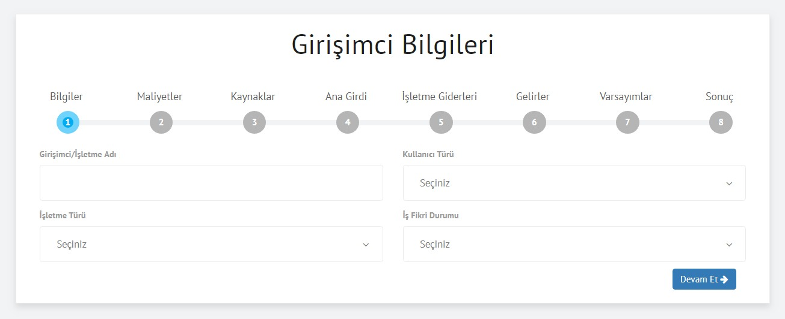
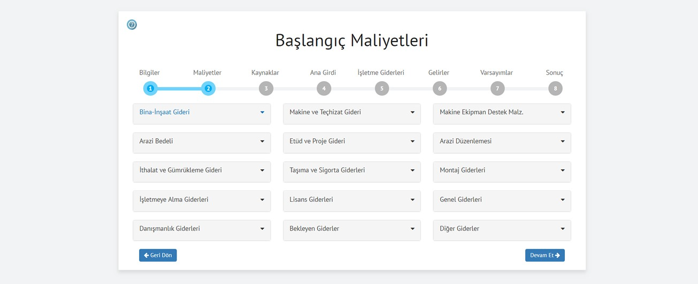
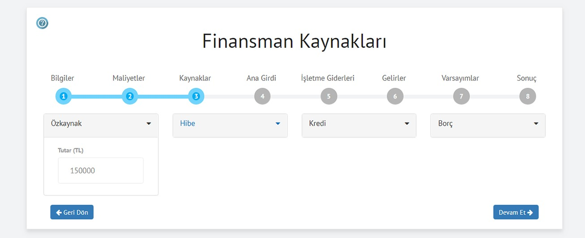
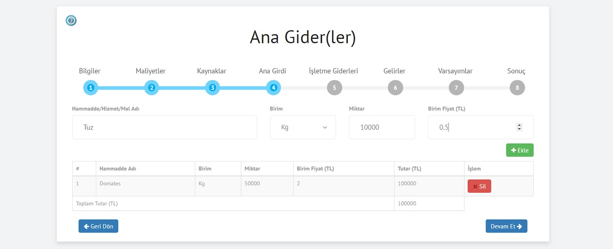
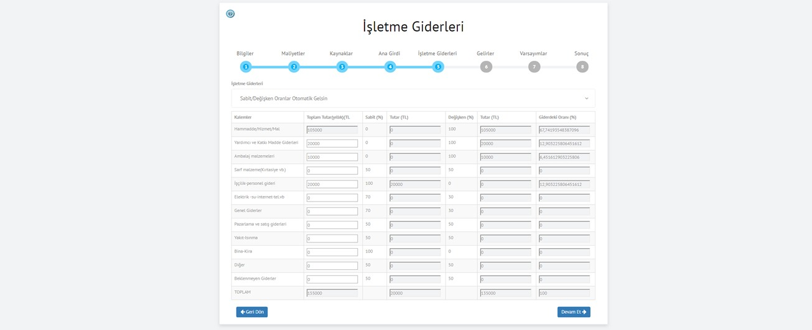
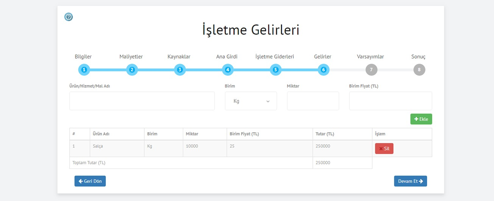
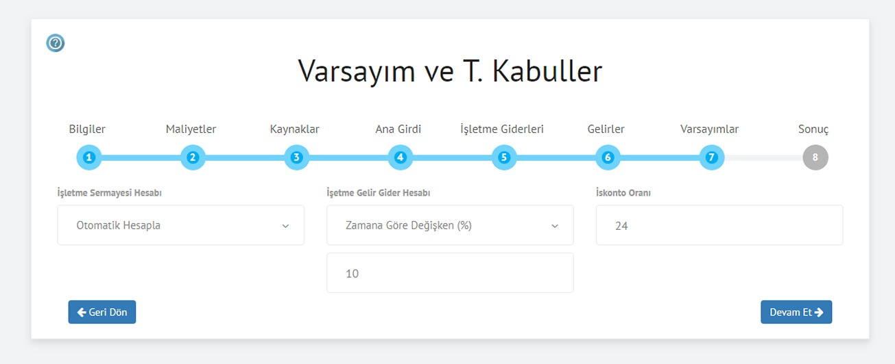
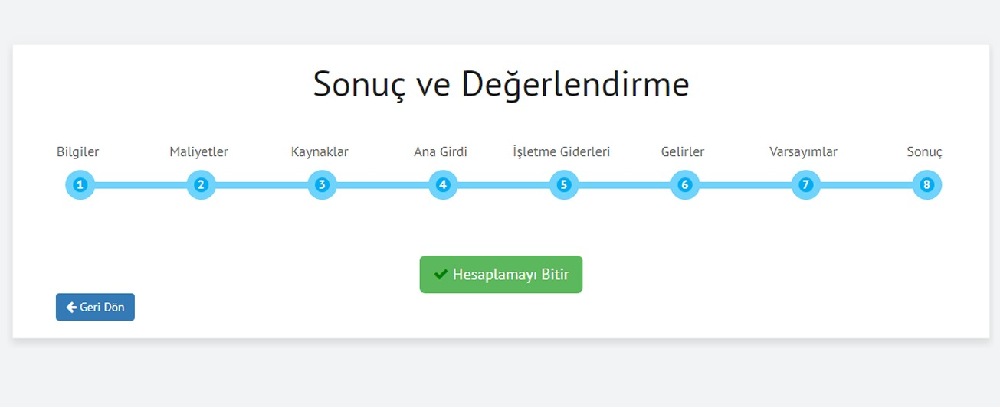

Merhaba ilk aşamaya hoş geldiniz. Hazırsanız hemen başlayabiliriz! Bu aşamada ilgili kutucuğa adınızı ve iş fikrinizi veya rapor konunuzu yazınız. İkinci kutucuğa geçtiğinizde gerçek veya tüzel kişi olarak seçiminizi yapınız. Bir sonraki kutucukta kullanıcı türünüzü belirledikten sonra dördüncü ve son kutucukta iş fikrinizin durumunu seçiniz.
Bir defaya mahsus yapılacak harcamalar; sabit yatırım veya başlangıç maliyeti olarak bu bölümde yer almaktadır. Her bir maliyetin sağında amortisman oranları otomatik olarak ekrana gelecektir. Eğer bu oranların bizim seçtiğimiz oranlardan farklı olduğunu düşünüyorsanız bu oranı değiştirebilirsiniz. Ancak bu oranları değiştirmemeniz tavsiye edilir. Harcama adlarını ilgili kutucuklardan bularak doldurunuz. İhtiyacınız olmadığını düşündüğünüz harcama kalemleri için kutucukları açmadan devam et butonuna basarak bir sonraki aşamaya geçebilirsiniz.
Bir önceki aşama olan ikinci aşamada başlangıç veya sabit yatırıma esas olan tüm harcamalar toplamınız otomatik olarak özkaynak kutucuğuna aktarılacaktır. Başlangıç yatırım maliyetleri için tek kaynağınız özkaynak olacak ise devam et butonuna basarak bir sonraki aşamaya geçebilirsiniz. Ancak öz kaynağınızın başlangıç maliyetlerini karşılayamadığı durumlarda diğer kaynak kalemlerine de eklemeniz gerekecektir. Nitekim bir önceki aşamadan bu kutucuğa gelen toplam değeri elde etmeniz gerekmektedir. Bu rakamı elde etmek için kredi, borç veya hibe kaynaklarından herhangi birini, ikisini veya üçünü KDV hariç olarak giriniz. Eğer kredi kullanacaksanız kredi kutucuğuna tıkladığınızda kredinizin vadesi ve faiz oranınızı girmeniz gerekmektedir. İşletmeniz için borç kullanmayı düşünüyor iseniz borç tutarını ve geri ödeme sürenizi giriniz. Hibe almayı planlıyorsanız almayı planladığınız hibe tutarını ilgili kutucuğa yazıp devam et butonuna basarak bir sonraki aşamaya geçebilirsiniz.
İşletmenizin bir yıllık ana girdisine lütfen bu bölümde yer veriniz. Birden fazla ana girdi var ise ana girdinizin birimini, miktarını ve birim fiyatını yazarak istediğiniz kadar ana girdi ekleyebilirsiniz. Ana girdiler sektörel olarak değişmekte olup ham madde/hizmet alımı/al-sat ürünleri vb. ana girdi olabilmektedir. Ana girdilerinizi yıllık olarak girmeniz gerekmektedir. Ana girdilerinizin yıllık toplam gideri bir sonraki aşama olan işletme giderleri bölümüne otomatik olarak aktarılacaktır. Ana girdiniz ham madde ise bu girdinizin mamül maddeye dönüştürme oranını dikkate almanız sonraki aşamalarda önem arz edecekir. Örneğin 5 Kg domatesten 1 kg salça elde ediliyorsa 6. aşamada yer alan gelirler bölümünde bu değerleri dikkate alarak miktar, birim fiyatı, ana girdiniz veya ham madddeniz ile örtüştürmeniz gerekmektedir. Kimi sektörlerde özellikle bazı hizmet, yazılım vb. sektörlerinde ana girdi yok ise bir sonraki aşamaya geçip işletme giderlerinizi girebilirsiniz.
İşletme giderleri kısmında iki seçenekle karşılaşacaksınız. İlk seçenecek basit, kolay ve anlaşılır tarzda olup sadece yıllık işletme giderlerinizi ilgili kutucuklara yazmanız gerekmektedir. İlk seçenek tablosunun ihtiyacınızı karşlılamadığını düşünüyor iseniz genellikle profesyonellerin tercih ettiği detaylı içerik olan sabit ve değişken gider oranlarını sizin belirleyeceğiniz ikinci seçeneği kullanabilirsiniz. İşletmenizle ilgili olmayan gider kalemleri var ise o bölümü doldurmadan devam et butonuna basarak bir sonraki aşamaya geçebilirsiniz.
Nihai ürün yada ürün gruplarına ait birimi, miktarı ve birim satış fiyatını ilgili kutucuklara sırası ile yazıp ekle butonuna basınız. Birden fazla ürününüz olması halinde her bir çıktı ürüne bu bölümde yer verebilirsiniz. İşletmenizin ara veya tali ürün gelirleri, diğer gelirler ve faaliyet dışı gelirleri olması halinde de bu bölümlere yer verebilirsiniz.
İlk Seçenek: Otomatik Hesapla (Önerilen) Varsayımlar ve teknik kabuller bölümünde ana ekrana çıkan ilk tanımlamalara riayet edip hiç bir değişiklik yapmadan devam et butonuna basarak bir sonraki aşamaya geçebilirsiniz. Bu yöntemde 1 aylık işletme gideri işletme sermayesi olarak varsayılmaktadır. İkinci Seçenek: Elle Giriş İşletme sermayenizi kendi belirleyeceğiniz tutar olarak manuel olarak girebilirsiniz. Ancak bu seçeneğin herhangi bir teknik hesaplama sonucu elde edilmek istenmesi halinde kullanılması önerilir. Üçüncü Seçenek: İşletme Devir Gün Hesabı ile Hesaplama Bu seçenekte işletmenizin ilk paket hizmet/ürünün satışını yapıp bedelini tahsil etme sürenize kadar olan süreçte ihtiyaç duyacağınız nakit miktarını hesaplanmaktadır. İkinci Kutucuk İşletme Gelir Gider Hesabı (Önerilen): Bu kutucuk size Sabit veya Değişken olmak üzere iki alternatif sunmaktadır. . Eğer hesaplamanızda her yılki gelirinizi (miktar ve birim fiyatları değiştirmeden) ve giderinizi sabit alarak hesaplamak istiyorsanız sabit seçeneğini seçmelisiniz. Ancak, işletme gelir ve giderlerinizi yıllara göre değiştirerek hesaplama yapmak istiyorsanız her bir yıl için artış oranı seçiniz. İskonto Oranı: Bu oran Merkez Bankası faiz oranı baz alınarak tarafımızca güncellenmektedir. Bu oranı değiştirmemeniz önerilir. Ancak sizin belirlediğiniz bir iskonto oranı var ise (enflasyon vb.) bu oranı manuel olarak değiştirerek süreci tamamlayabilirsiniz.
Tebrikler! Sizi en son aşamaya başarılı bir şekilde ve fazla zorlanmadan 5 dakikadan daha az bir sürede getirebildiğimizi umuyoruz. Kobimatik akıllı uygulama paketi, ilgili iş fikrinizin veya fizibilite raporunuzun finansal açıdan uygun olup olmadığına değerlendirme ve sonuçlarla karar verir. Bu süreçte ilk 7 aşamada girdiğiniz tüm veriler arka plandaki uygulamamız aracılığıyla dinamik ve statik parametreleri dikkate alarak değerlendirilmektedir. Bu parametler hem paranın zaman değerini dikkate alan ve hem de paranın zaman değerini dikkate almayan unsurları içermektedir. Ekranda çıkan bu 6 parametrenin birbirleriyle iş birliği içerisinde iş fikrinizin uygun olup olmadığını belirtmesi beklenmektedir. İstisnai durumlar dışında bu 6 üyenin hepsi ya iş fikrinizin uygun olduğuna ya da olmadığınıa karar verecektir. Nitekim unutulmamalıdır ki iş fikrinizin türüne göre istisnai durumlar olabilir. Böyle bir durumla karşılaşmanız halinde fizkirlerimizi paylaşmak amacıyla sonuçları bizimle paylaşmaınızı rica ederiz. Nice başka analizlerde buluşmak ve birlikte raporlama yapmak ümidiyle, hoşçakalın.
